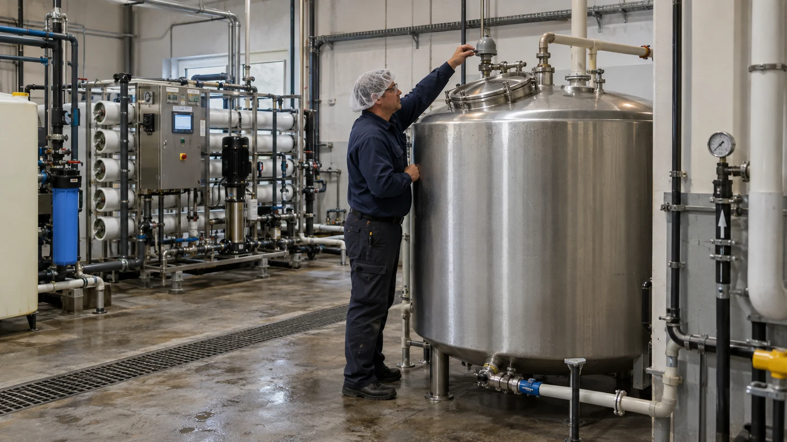
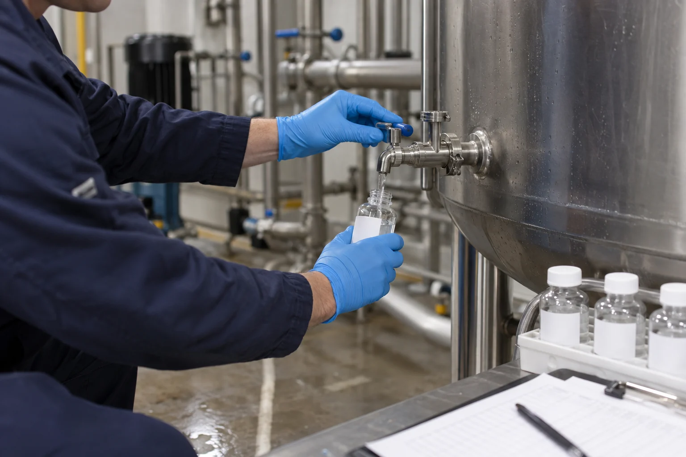
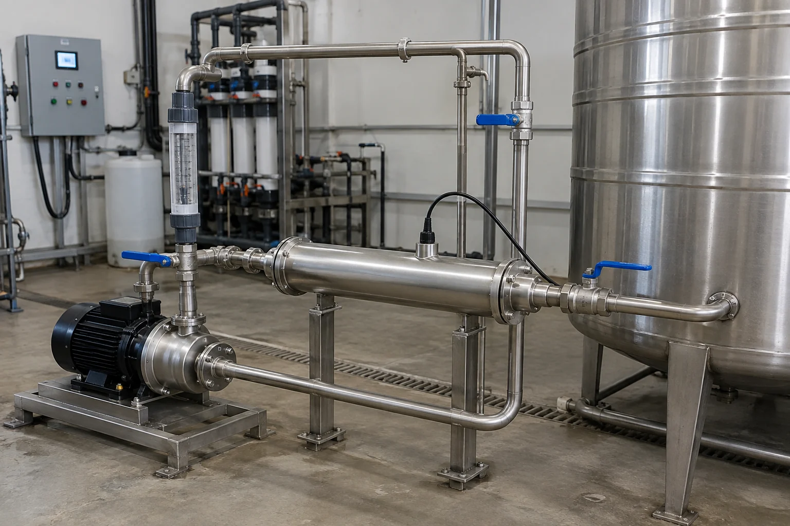

Why Can Bacteria Return After RO Water Enters a Storage Tank?
Why RO water can pass at production but develop odor, slime or bacteria after storage — and how cleaning, recirculation UV and ozone fit into the fix
Ask an Engineering Question ↗
Why can bacteria return after RO water enters a storage tank?
Short answer: An RO system can remove most dissolved solids, particles and microorganisms from the feedwater, but it cannot guarantee that the water will remain microbiologically controlled after it enters a storage tank. An unclean tank, an unprotected vent, excessive storage time or stagnant piping can allow the water to become contaminated again.
UV can inactivate microorganisms in the water that passes through the UV reactor. It cannot remove biofilm from the tank wall or leave lasting protection in the water. A practical control plan therefore usually starts with cleaning and sanitizing the tank and piping, correcting contamination routes and stagnant areas, and then using recirculation or point-of-use UV for ongoing control.
On this page
- Why can RO water pass at production but fail after storage?
- Does odor or slime prove that bacteria are present?
- How can you find where the contamination begins?
- What can UV solve—and what can it not solve?
- How should you choose between cleaning, UV and ozone?
- Where should the UV system be installed?
- Do not size UV from tank volume alone
- Buyer’s RFQ checklist
- Frequently asked questions
Why can RO water pass at production but fail after storage?
It helps to think of the system as two separate control zones:
- The RO system treats the incoming water.
- The tank and distribution piping keep the treated water from becoming contaminated again.
Many problems occur in the second zone. Common causes include:
- Contamination entering the tank. An unsealed lid, damaged vent filter, poor maintenance practice or backflow can introduce microorganisms and debris.
- Water staying in the tank too long. An oversized tank or low demand can leave water sitting in poorly mixed areas for extended periods.
- Biofilm on the tank or pipe wall. Biofilm is the slippery layer that can develop on wet surfaces. It can release microorganisms back into the water.
- Stagnant branches and fittings. Rarely used pipes, hoses, sample valves and valve cavities can become local contamination points.
- Cleaning without correcting the cause. If excessive water age, poor tank sealing or dead legs remain, the problem may return after cleaning.
For this reason, a failed bacteria result does not automatically mean that the RO membrane has failed. Sampling the system in sections is usually the fastest way to locate the problem.
Does odor or slime prove that bacteria are present?
No. Odor and slime are warning signs, but they do not identify the cause by themselves, and smell cannot tell you whether water is safe.
| What you notice | Possible causes | What to check first |
|---|---|---|
| Rotten-egg odor | Hydrogen sulfide in the source water, exhausted media or an oxygen-poor stagnant area | Compare the source water, RO outlet and tank outlet to find where the odor begins |
| Earthy, musty or fishy odor | Source-water odor compounds, aging filter media or microbial activity | Inspect the filters and tank, then review microbiological results |
| Slippery tank wall | Possible biofilm, deposits or cleaning-agent residue | Inspect during shutdown and take surface and water samples if needed |
| Plastic or chemical odor | New tank or pipe material, or incomplete rinsing after sanitization | Review material suitability and cleaning records |
| Bacteria results that vary widely | Biofilm release, a dirty sample valve or inconsistent sampling | Standardize the sample point, timing and method, then look at the trend |
If the water is used for drinking, food production or another sensitive purpose, isolate the affected supply and investigate according to the site's procedure when there is unusual odor, visible slime or a microbiological excursion.
How can you find where the contamination begins?
Do not rely on one sample point. Collect samples at approximately the same time from at least four locations:
| Sample location | What it tells you |
|---|---|
| RO outlet before the tank | Whether the RO product water is under control |
| Tank outlet | Whether water quality changes during storage |
| Recirculation return | Whether the loop is returning contamination to the tank |
| Farthest point of use | Whether long piping or a rarely used branch is the problem |
If the RO outlet passes but the tank outlet fails, focus on the tank. If the tank outlet passes but a distant outlet fails, focus on the downstream piping and point of use.

Testing should match the intended use and applicable rules. In addition to microbiological testing, record temperature, turbidity, disinfectant residual where applicable, and how long the water has remained in the tank. ATP testing can help track cleaning trends, but it does not replace required microbiological methods.
What can UV solve—and what can it not solve?
What UV can do
- Inactivate microorganisms in water that passes through the reactor;
- Add a treatment barrier after RO, on the tank recirculation loop or before the final point of use;
- Provide disinfection without dosing a chemical disinfectant into the water.
What UV cannot do
- Remove established biofilm from tank and pipe walls;
- Treat stagnant areas that do not pass through the reactor;
- Continue protecting the water after the UV system is off;
- Replace tank cleaning, piping sanitation or hygienic operation;
- Guarantee performance based on lamp power alone.
If the tank already contains slime or heavy deposits, the correct sequence is usually to stop and investigate, clean and sanitize the system, correct the contamination route, and then install or revalidate the UV barrier.
How should you choose between cleaning, UV and ozone?
| Method | Main purpose | What the buyer should know |
|---|---|---|
| Tank and piping cleaning/sanitization | Removes deposits and established biofilm | Essential for every system; frequency should follow inspection and test results, not a universal quarterly schedule |
| Recirculation UV | Reduces microorganisms in the circulating water during normal operation | Leaves no residual and cannot replace cleaning; selection depends on actual flow and UV transmittance |
| Point-of-use UV | Adds a final barrier immediately before use | Protects only the downstream section and does not correct an unhygienic tank |
| Ozone circulation | Provides oxidation and disinfection and can contact more system surfaces | Requires mixing, off-gas destruction and safety monitoring; ozone decays and is not a long-term residual |
| Persistent chemical residual | Provides continuing protection during storage and distribution | May change water chemistry or create byproducts; confirm product and process compatibility |
For many commercial RO storage systems, a sensible starting point is hygienic correction, risk-based inspection and cleaning, reduced storage time, and a properly selected recirculation UV system. Long piping systems or applications that require a persistent residual need a separate disinfectant-residual assessment.
Where should the UV system be installed?
| UV location | What it helps control | Limitation |
|---|---|---|
| After RO, before the tank | Reduces microorganisms entering the tank | The tank and downstream piping can still be recontaminated |
| On the tank recirculation loop | Repeatedly treats the circulating tank water | Biofilm and stagnant areas still require physical or chemical cleaning |
| Before the final point of use | Adds a last treatment barrier | Does not improve the tank or long upstream piping |
Some projects use both recirculation UV and final-point UV. More equipment, however, does not automatically mean better control. Locate the contamination first and then choose the treatment point.

Do not size UV from tank volume alone
Tank volume tells you how much water is stored, but it does not determine the correct UV model by itself. A responsible supplier should ask for:
- Normal and maximum recirculation flow;
- UV transmittance, which describes how easily UV light travels through the water;
- The target microorganism and applicable treatment standard;
- Water temperature, pressure, turbidity, iron, manganese and hardness;
- Tank inlet/outlet arrangement, mixing and possible stagnant areas;
- Required intensity monitoring, alarms and fault interlocks;
- Maintenance expectations and local availability of lamps and sleeves.
Do not treat 40 mJ/cm² as a universal answer. The required UV dose depends on the target organism, applicable standard and validated performance of the specific reactor.
Within the KONCHE KC-UV range, the KC-UV-0.5/2 has a nominal flow range of 0.5–2 m³/h and the KC-UV-20/60 has a nominal range of 20–60 m³/h. These figures can support preliminary selection for small points of use and larger recirculation loops. Final selection still requires actual flow, UV transmittance and the target dose; nominal flow alone is not a performance guarantee.
Buyer’s RFQ checklist
Send the following information to potential suppliers:
- RO production rate, peak demand and daily operating hours;
- Tank volume and typical storage time;
- Test results from the RO outlet, tank outlet and farthest point of use;
- Temperature, turbidity, hardness, iron, manganese and UV transmittance;
- A piping diagram, tank photographs and available installation space;
- Final water use and applicable standard;
- Required alarms, automation and spare-parts support.
If a supplier asks only for “cubic metres per hour” and immediately provides a model and fixed inactivation claim, ask for the missing sizing basis.
Frequently asked questions
Can UV make a storage tank sterile?
No. UV treats the water that passes through the reactor. Tank walls, deposits and stagnant piping still require cleaning, sanitization and hygienic design.
How often should the tank be cleaned?
There is no universal interval. The schedule should reflect the water use, tank condition, deposits, microbiological trend and local requirements.
Is a UV lamp effective as long as it is illuminated?
Not necessarily. Lamps age and quartz sleeves can foul. Check UV intensity, flow, alarm status and maintenance records rather than relying on visible light alone.
Why can a tank still have problems when UV is installed after RO?
Pre-tank UV reduces the microbial load entering the tank. It cannot prevent later contamination from an unsealed tank, excessive water age or existing biofilm.
Recommended for this application
Related KONCHE systems and guides for the duties discussed in this article:
RO trains from 0.25 to 50 m³/h standard bands, larger duties engineered.
View ↗LOW-PRESSURE UVLow-Pressure UV Sterilizer254 nm sterilizers for recirculation and point-of-use duty, 0.25–50 m³/h.
View ↗IN-TANK UVKCJ Submersible In-Tank UVSealed lamp assemblies disinfect stored water and tank headspace.
View ↗OZONEOzone Disinfection SystemOzone generation, mass transfer and off-gas treatment, 1–200 g/h.
View ↗ARTICLEUV or Ozone?The differences buyers need to know.
View ↗ARTICLEHow to Size a UV SystemThe four inputs that control UV sizing.
View ↗Find the contamination
before the equipment.
Send your sampling results (RO outlet, tank outlet, farthest point of use), flows and tank arrangement. KONCHE will locate the problem zone and propose the correct barrier.
Get Expert Support →